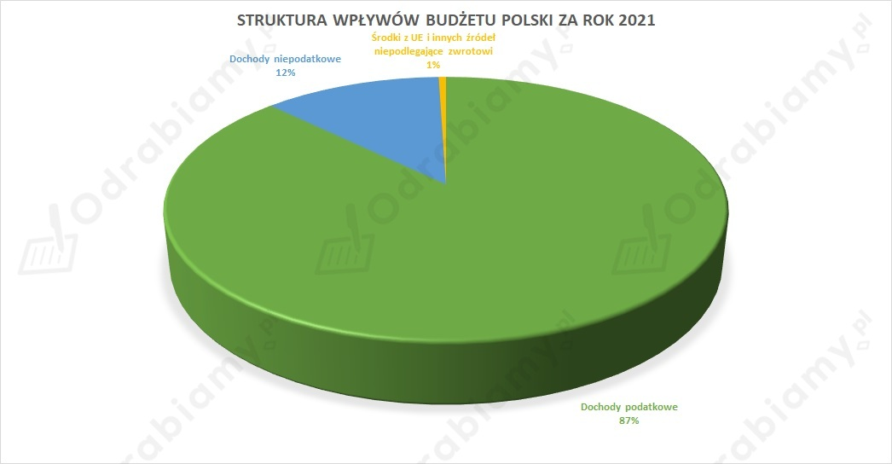
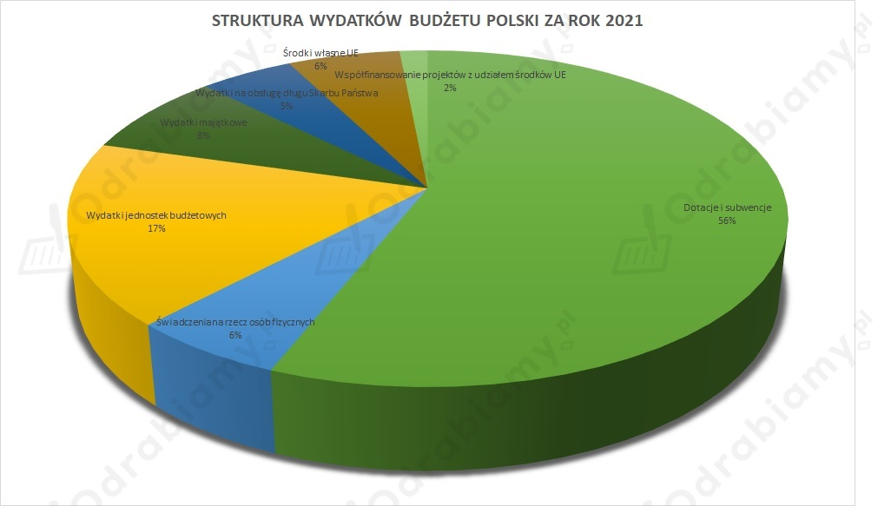

Zadanie ma charakter indywidualny. Dlatego proponowane rozwiązanie może zawierać wyłącznie przykładowe wskazówki pomocne do samodzielnego sformułowania odpowiedzi.
Przykładowa odpowiedź:
a)
-> Poniżej przedstawiono dwa artykuły dotyczące meczu 1/8 finału Ligi Mistrzów z 14 lutego 2023 roku, w którym PSG przegrało u siebie z Bayernem Monachium 0:1
W obu poniższych tekstach to, co stanowi wyłącznie fakty, podkreślono i pogrubiono. Pozostałe części tekstów to opinie.
ARTYKUŁ NR 1:
Francuscy dziennikarze bez ogródek podsumowali grę piłkarzy PSG w meczu 1/8 finału LM przeciwko Bayernowi. Dostało się wielu gwiazdom, na czele z Leo Messim i Neymarem.
Paris Saint-Germain zasłużenie przegrało z Bayernem 0:1, przez większość spotkania będąc jedynie tłem dla rywali z Monachium. Dopiero wejście Kyliana Mbappe odmieniło grę mistrzów Francji, ale w ostatecznym rozrachunku nie pozwoliło nawet na wywalczenie remisu. Wpływ na taki rezultat miała słaba gra wielu ważnych zawodników drużyny z Parc des Princes.
https://www.meczyki.pl/newsy/francuskie-media-bez-litosci-dla-psg-messiemu-wytknieto-powtarzajacy-sie-blad-bardzo-rozczarowujacy-mecz/206110-n (dostęp: 15 lutego 2023 roku).
ARTYKUŁ NR 2:
https://wyborcza.pl/7,154903,29465742,liga-mistrzow-znow-nie-dla-paryza-bayern-lepszy-w-hicie-1-8.html (dostęp: 15 lutego 2023 roku).
b)
W obu przytoczonych fragmentach tekstów, dotyczących tego samego wydarzenia, tj. meczu 1/8 finału Ligi Mistrzów, w którym zmierzyło się PSG z Bayernem Monachium, przeważają subiektywne opinie autorów artykułów. Wyrażają oni swoje oceny na temat postawy piłkarzy w meczu i snują własne przypuszczenia co do spotkania rewanżowego. Jedynym czystym faktem, jaki podają, jest to, że odbył się konkretny mecz, który zakończył się porażką PSG z Bayernem Monachium w wysokości 0:1.
c)
'Trzy sita Sokratesa' zakładają, że to, co chce się powiedzieć, powinno być wcześniej sprawdzone pod kątem prawdziwości (należy się zastanowić, czy jest to zgodne z prawdą), dobra (trzeba przemyśleć, czy to, co ma się przekazać, przysparza dobra) i pożyteczności (warto sprawdzić, czy to, co chce się powiedzieć, jest jakkolwiek pożyteczne).
Jeśli chodzi o przytoczone powyżej teksty, to prawdziwe w nich było podanie wyniku. Faktycznie bowiem PSG w dniu 14 lutego 2023 roku uległo Bayernowi Monachium 0:1. Nie ma jednak pewności co do oceny tego, czy newsy na ten temat, zawierające subiektywne opinie autorów, są dobre i pożyteczne. To, czy zostaną ocenione jako dobre i pożyteczne, zależy od kontekstu i tego, kto jest odbiorcą tych wiadomości. Są to wszakże wiadomości sportowe, zatem będą dobre dla kibiców drużyny zwycięskiej, a złe dla fanów drużyny, która przegrała.
Rozwiązanie 1.:
A. W tekście tym została przedstawiona metoda perswazji i manipulacji nazywana "wielokrotnym powtarzaniem", tzn. umiejscowienie informacji o kradzieży dokonanej przez Romkę obok artykułu dotyczącego szajki kieszonkowców prowadzi do tego, że pogłębia się stereotyp, który wskazuje na Romów jako na złodziei.
B. W tekście nr 2 przedstawiono metodę perswazji i manipulacji dotyczącą "inscenizacji", czyli na przedstawieniu wyreżyserowanych scen, które odgrywane są przez aktorów i przedstawianie ich odbiorcom jako prawdziwych wydarzeń.
Rozwiązanie 2.:
A.
W przypadku tego tekstu zastosowano technikę medialnej perswazji i manipulacji nazywaną 'wielokrotnym powtarzaniem', która polega na tym, że powiela się te same lub podobne nierzetelne informacje, co ma doprowadzić do sytuacji, w której odbiorca zapomni o ich źródle i z czasem zacznie je postrzegać jako udowodnione fakty. W wypadku przywołanego tekstu chciano pogłębić stereotyp o Romach jako złodziejach.
B.
W przypadku tego tekstu zastosowano technikę medialnej perswazji i manipulacji, jaką jest 'inscenizacja', tj. przedstawianie wyreżyserowanych scen odegranych przez aktorów jako rzeczywistych zdarzeń. W opisanym fragmencie mowa jest o tym, że dziennikarz zamieścił rzekome wypowiedzi świadków zdarzenia w swoim materiale, które były jednak wyłącznie grą aktorską.
Rozwiązanie 1.:
Poniższe informacje możesz wykorzystać do napisania wypracowania:
Przez pandemię związaną z koronawirusem rządy państw podjęły szereg środków, których celem jest ograniczenie rozprzestrzeniania się tej choroby. Wprowadzono zamknięcie granic, ograniczono możliwość przemieszczania się, odwołano wiele wyjazdów turystycznych (w tym także do Polski) a w wielu zakładach pracy (zakłady fryzjerskie, biura turystyczne, zakłady kosmetyczne, sklepy) odnotowano znaczący spadek przychodów a nawet ich całkowity brak. To powoduje spadek popytu na wiele usług i produktów, co dla wielu wspomnianych przedsiębiorstw wiąże się z poważnymi problemami. Już odczuwalne są pierwsze skutki tej sytuacji. W wielu państwach drastycznie rośnie bezrobocie, spadają prognozy produktu krajowego brutto, odnotowuje się upadłości kolejnych firm. Rządy państw, w tym Polski, szykują bądź już przygotowały pakiety pomocowe, co powoduje wzrost ich zadłużenia. Pandemia koronawirusa z całą pewnością wpłynie więc na życie gospodarcze wielu państw świata. Powrót do sytuacji sprzed pandemii najprawdopodobniej potrwa wiele miesięcy. Generalnie skutkiem tej pandemii będzie więc zatrzymanie rozwoju gospodarczego wielu państw a nawet, w niektórych przypadkach, regres gospodarczy.
Budżetem państwa nazywamy roczne zestawienie wszystkich dochodów i wydatków państwa. Organem odpowiedzialnym za przygotowanie preliminarzu budżetowego (planu budżetu) jest Rada Ministrów, która przedstawia go w formie ustawy do akceptacji przez parlament (sejm i senat). Po jego akceptacji i podpisaniu przez prezydenta, Ministerstwo Finansów staje się wykonawcą budżetu. Budżet państwa związany jest bezpośrednio z Narodowym Bankiem Polskim, który przyjmuje wszystkie wpływy, realizuje wydatki oraz przechowuje czasowo wolne środki pieniężne. Budżet państwa konstruowany jest według ściśle określonych zasad.
Dochody do budżetu państwa to niemal wyłączne wpływy w postaci różnych podatków bezpośrednich i pośrednich płaconych przez wszystkie podmioty gospodarcze (gospodarstwa domowe i przedsiębiorstwa). Oprócz dochodów podatkowych wpływy budżetowe stanowią wpłaty z zysku przedsiębiorstw państwowych, dywidendy z tytułu akcji i udziałów w spółkach Skarbu państwa oraz opłaty administracyjne i cła.
Po przeciwnej stronie dochodów budżetowych stoją wydatki. Wydatki te obejmują dotacje i subwencje, wydatki bieżące jednostek budżetowych, obsługę długu publicznego, świadczenia na rzecz osób fizycznych, wydatki inwestycyjne czy rozliczenia z bankami z tytułu zaciągniętych kredytów i wykupu odsetek.
Co rok zmienia się procentowa struktura wpływów, jak i przede wszystkim struktura wydatków z budżetu. Zmiany te są nierozerwalnie związane z aktualną sytuacją gospodarczą kraju. Poznanie struktury budżetowej pozwala lepiej zrozumieć politykę fiskalną państwa oraz jego granice finansowe.
W tabeli poniżej znajdują się dane dotyczące wysokości wpływów i wydatków do budżetu Polski w 2021 roku.
| Dochody | Wydatki | ||
| 1. Dochody podatkowe | 87,3% | 1. Dotacje i subwencje | 56 |
| a) podatek od towarów i usług | 43,6 | 2. świadczenia na rzecz osób fizycznych | 6 |
| b) podatek akcyzowy | 15,3 | 3. Wydatki jednostek budżetowych | 17,5 |
| c) podatek od gier | 0,6 | 4. Wydatki majątkowe | 8 |
| d) podatek dochodowy od osób prawnych | 10,6 | 5. Wydatki na obsługę długu Skarbu państwa | 5 |
| e) podatek dochodowy od osób fizycznych | 14,9 | 6. Środki własne UE | 6 |
| f) podatek od wydobycia niektórych kopalin | 0,7 | 7. Współfinansowanie projektów z udziałem środków UE | 1,5 |
| g) podatek od niektórych instytucji finansowych | 1,1 | ||
| h) podatek od sprzedaży detalicznej | 0,5 | ||
| 2. Dochody niepodatkowe | 12,2% | ||
| a) dywidendy i wpłaty z zysku | 0,4 | ||
| b) wpłaty z zysku z NBP | 1,8 | ||
| c) cło | 1,3 | ||
| d) dochody państwowych jednostek budżetowych i inne dochody nieopodatkowane | 8,1 | ||
| e) wpłaty jednostek samorządu terytorialnego | 0,6 | ||
| 3. Środki z UE i innych źródeł niepodlegające zwrotowi | 0,5% | ||
| Ogółem | 100% | Ogółem | 100% |
| Dochody ogółem w mld zł | 495,0 | Wydatki ogółem w mld zł | 521,3 |
| Deficyt budżetowy w mld zł | 26,3 |
Wpływy podatkowe stanowią zdecydowaną część wszystkich dochodów Polski, w roku 2021 stanowiły one 87,3%. Resztę wpływów stanowiły dochody niepodatkowe (12,2%) oraz środki z UE i innych źródeł niepodlegające zwrotowi (0,5%).

W 2021 roku z budżetu Polski największy procent wydatków (56%) stanowiły dotacje i subwencje. Na kolejnych miejscach znalazły się wydatki bieżące jednostek budżetowych (17,5%),wydatki majątkowe (8%), świadczenia na rzecz osób fizycznych (6%), środki własne UE (6%), wydatki na obsługę długu Skarbu Państwa (5%). Najmniejszą część wydatków z budżetu stanowiło współfinansowanie projektów z udziałem środków UE (1,5%).

Ogólna suma wydatków budżetu Polski w 2021 roku wyniosła 521,3 mld zł, natomiast ogólna suma dochodów była znacznie niższa i wyniosła 495 mld zł. W Polsce po raz kolejny wystąpił deficyt budżetowy (różnica pomiędzy wydatkami a dochodami), wyniósł on 26,3 mld zł i stanowił 1% PKB naszego Kraju (PKB Polski w 2021 roku wyniosło 2 622,2 mld zł).
Propozycja zmian w strukturze- uzasadnienie.
Deficyt budżetowy wynika z nadmiernych wydatków państwa (np. poprzez finansowanie drogich programów socjalnych oraz nadmierne dotacje i subwencje, związane chociażby z łagodzeniem skutków pandemii COVID-19 jak i galopującej inflacji) jak również z niskich dochodów (niskich podatków i nieskutecznego systemu ściągania podatków). Deficyt budżetowy jest powszechnie występującym zjawiskiem na świecie. Nawet bogate kraje mają problem z równoważeniem budżetu, gdyż ich wydatki zdecydowanie przewyższają wpływy z podatków. Państwo chcąc “załatać dziurę budżetową” zaciąga pożyczki na pokrycie deficytu, zwiększając tym samym dług publiczny.
Długiem publicznym nazywamy całkowite zobowiązania finansowe państwa z tytułu zaciągniętych pożyczek na pokrycie deficytu budżetowego, w głównej mierze w postaci emisji obligacji skarbowych. W Polsce w 2021 roku dług publiczny stanowił prawie 44% PKB i wynosił już 1,15 bln zł i z roku na rok drastycznie wzrasta.
Krótkotrwały i niewielki deficyt budżetowy może być korzystny dla gospodarki, ponieważ zwiększenie przez państwo wielkości wydatków finansowanych deficytem skutkuje wzrostem popytu w gospodarce i wzrostem wartości PKB. Jednak długo występujący deficyt wiąże się z kosztowną obsługą długu publicznego, który stanowi poważne problemy gospodarcze.
Problemy gospodarcze jakie powoduje deficyt oraz dług publiczny:
Deficyt budżetowy można zmniejszyć poprzez:
Rozwiązanie 2.:
Zadanie ma charakter indywidualny. Dlatego proponowane rozwiązanie może stanowić wyłącznie przykładową wskazówkę do samodzielnego opracowania odpowiedzi.
Przykładowe wskazówki pomocne do samodzielnego opracowania odpowiedzi:
Bieżąca sytuacja gospodarcza w Polsce jest skomplikowana pod wpływem różnych czynników, w tym pandemii COVID-19. Poniżej przedstawiono krótki, przykładowy przegląd kilku kluczowych kwestii:
Bezrobocie:
Według danych Głównego Urzędu Statystycznego (GUS), stopa bezrobocia w Polsce wyniosła w grudniu 2021 roku 4,6%, co jest relatywnie niskim poziomem w porównaniu z innymi krajami Unii Europejskiej. Niemniej jednak, warto zauważyć, że w ciągu ostatnich kilku lat zwiększyła się liczba osób pracujących na umowy o dzieło oraz umowy cywilnoprawne, co nie daje takiej stabilizacji zatrudnienia jak umowa o pracę.
Inwestycje:
W ciągu ostatnich lat w Polsce można zaobserwować zwiększający się poziom inwestycji, zarówno krajowych jak i zagranicznych. W 2020 roku wartość inwestycji zagranicznych w Polsce wyniosła ponad 13 mld euro, co stanowi około 7% PKB kraju. Z drugiej strony, w wyniku pandemii COVID-19 wiele firm odłożyło planowane inwestycje lub zdecydowało się na ich redukcję.
Perspektywy na przyszłość:
Perspektywy gospodarcze Polski na przyszłość są stosunkowo dobre, z uwagi na relatywnie niski poziom bezrobocia oraz rosnący poziom inwestycji. Niemniej jednak, trudno dokładnie przewidzieć rozwój sytuacji, ponieważ nadal trwają negatywne skutki pandemii COVID-19, co może wpłynąć na wiele aspektów gospodarki. Warto też zwrócić uwagę na kwestie związane z polityką monetarną i fiskalną, które mają wpływ na kształtowanie się gospodarki w Polsce. Zmiany w tych obszarach mogą wpłynąć na rozwój inwestycji, wzrost czy spadek zatrudnienia i w konsekwencji sytuację gospodarczą kraju.
Podsumowując, bieżąca sytuacja gospodarcza w Polsce jest złożona i zależna od wielu czynników, zarówno wewnętrznych jak i zewnętrznych. Niemniej jednak, ogólnie rzecz biorąc, perspektywy wydają się dobre, a Polska pozostaje atrakcyjnym miejscem dla inwestorów, co może wpłynąć na dalszy rozwój gospodarki. W 2022 i 2023 roku poważnym problemem była jednak rosnąca inflacja.
Rozwiązanie 1.:
Na ilustracji została przedstawiona manipulacja, która związana jest z przeinaczaniem faktów w zakresie liczebności osób manifestujących, co ma na celu udowodnić rację danej strony, co w gruncie rzeczy nie jest prawdą, bowiem jak widać na ilustracji przedstawiono garstkę osób manifestujących. Tym samym autor rysunku wskazał, że media mogą manipulować przedstawianym przez nie obrazem danych zdarzeń poprzez inscenizowanie wydarzeń, a następnie przekazywanie odbiorcom, jakoby były one rzeczywiste.
Rozwiązanie 2.:
Manipulacja, którą prześmiewczo przedstawił autor rysunku, polega na tym, że relacjonowane przez media zdarzenie jest w gruncie rzeczy inscenizowane. Inscenizacja to przedstawianie wyreżyserowanych scen odegranych przez aktorów jako rzeczywistych wydarzeń. Widz ma myśleć, że ogląda coś, co dzieje się naprawdę, żywiołowo i spontanicznie, tymczasem serwuje się mu odegraną scenkę, wprowadzając go w błąd.